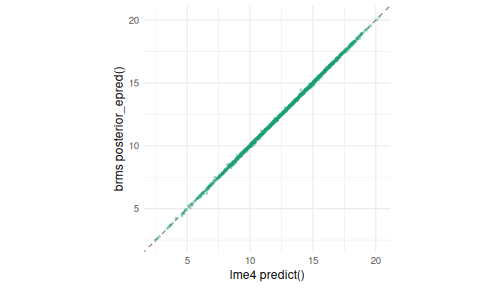
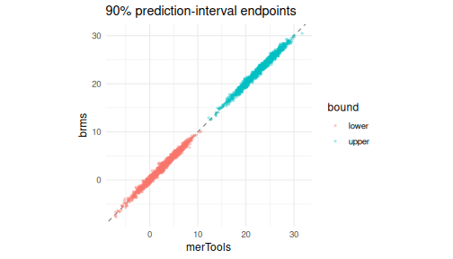
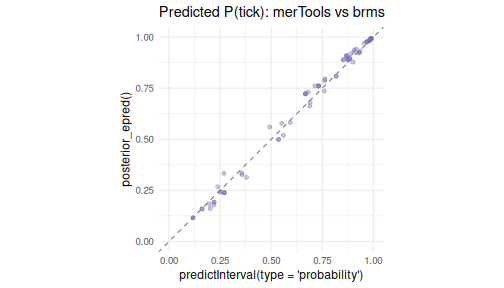

Validating predictInterval() against brms
Jared Knowles and Carl Frederick
Written 2026-05-29 (last updated 2026-05-29)
Source:vignettes/brms_validation.Rmd
brms_validation.RmdWhy compare to brms?
merTools::predictInterval() was written to put
prediction intervals on mixed-effect models that are too large or too
slow to bootstrap. It does this by simulating from the estimated
distribution of the fixed and random effects – fast, but an
approximation. Since then, brms has become a standard for
fully Bayesian multilevel modeling, and its posterior
predictive distribution is about as close to a gold standard as we have.
This vignette asks a simple question: how close are
predictInterval()’s intervals to the ones brms
produces?
We look at three things: a Gaussian random-slopes model, what happens
for an entirely unobserved group, and a binomial GLMM. This vignette is
precompiled – reproducing it requires the brms
package and a working Stan toolchain.
A random-slopes model
We use the bundled hsb data (7,185 students in 160
schools) and model math achievement from student SES, school-mean SES,
and a school-varying SES slope. We hold out 20% of students for testing,
plus six whole schools to stand in for “new groups” later.
data(hsb)
hsb$schid <- factor(hsb$schid)
new_schools <- sample(levels(hsb$schid), 6)
hsb$.set <- "train"
hsb$.set[hsb$schid %in% new_schools] <- "test_new"
seen <- which(hsb$.set == "train")
hsb$.set[sample(seen, round(0.2 * length(seen)))] <- "test_seen"
train <- droplevels(hsb[hsb$.set == "train", ])
test_seen <- hsb[hsb$.set == "test_seen" & hsb$schid %in% levels(train$schid), ]
test_new <- hsb[hsb$.set == "test_new", ]
f1 <- mathach ~ ses + meanses + (ses | schid)
m_lme <- lmer(f1, data = train)
brms_fit_seconds <- system.time(
m_brm <- fit_brm(f1, train, gaussian(), "brms_hsb_meanses"))[["elapsed"]]We draw a predictive distribution for each held-out student from each
method – predictInterval(returnSims = TRUE) and
brms::posterior_predict() – and compute everything (point
estimates, intervals, coverage) from those draws.
mt_seen <- mt_draws(m_lme, test_seen)
pp_seen <- posterior_predict(m_brm, newdata = test_seen, allow_new_levels = TRUE)Point estimates are essentially identical
Both methods condition on the same estimated fixed effects and school BLUPs, so the conditional-mean predictions should agree almost exactly – and they do.
lme_mean <- predict(m_lme, newdata = test_seen)
brm_mean <- colMeans(posterior_epred(m_brm, newdata = test_seen, allow_new_levels = TRUE))
c(correlation = cor(lme_mean, brm_mean),
mean_abs_diff = mean(abs(lme_mean - brm_mean)),
response_sd = sd(test_seen$mathach))
#> correlation mean_abs_diff response_sd
#> 0.99984045 0.03670134 6.71745425
ggplot(data.frame(merTools = lme_mean, brms = brm_mean), aes(merTools, brms)) +
geom_abline(slope = 1, intercept = 0, linetype = 2, color = "grey50") +
geom_point(alpha = 0.3, size = 0.8, color = "#1B9E77") + coord_equal() +
labs(x = "lme4 predict()", y = "brms posterior_epred()") +
theme_minimal(base_size = 12)
plot of chunk point
The prediction intervals agree
b_mt <- qband(mt_seen, 0.90); b_brm <- qband(pp_seen, 0.90)
c(width_merTools = median(b_mt$upr - b_mt$lwr),
width_brms = median(b_brm$upr - b_brm$lwr),
cor_lower = cor(b_mt$lwr, b_brm$lwr),
cor_upper = cor(b_mt$upr, b_brm$upr))
#> width_merTools width_brms cor_lower cor_upper
#> 20.1789145 20.2344075 0.9901934 0.9899334
endpts <- rbind(data.frame(bound = "lower", merTools = b_mt$lwr, brms = b_brm$lwr),
data.frame(bound = "upper", merTools = b_mt$upr, brms = b_brm$upr))
ggplot(endpts, aes(merTools, brms, color = bound)) +
geom_abline(slope = 1, intercept = 0, linetype = 2, color = "grey50") +
geom_point(alpha = 0.3, size = 0.8) + coord_equal() +
labs(title = "90% prediction-interval endpoints", x = "merTools", y = "brms") +
theme_minimal(base_size = 12)
plot of chunk intervals
And they are equally well calibrated
The real test is out-of-sample: do nominal intervals cover held-out scores at the nominal rate? Both methods track the diagonal, and each other.
data.frame(nominal = NOMINAL,
merTools = coverage(mt_seen, test_seen$mathach, NOMINAL),
brms = coverage(pp_seen, test_seen$mathach, NOMINAL))
#> nominal merTools brms
#> 1 0.50 0.4569776 0.4598698
#> 2 0.80 0.7895879 0.7932032
#> 3 0.90 0.9168474 0.9168474
#> 4 0.95 0.9660159 0.9703543At a fraction of the cost
t_lme <- system.time(lmer(f1, data = train))[["elapsed"]]
t_mt <- system.time(mt_draws(m_lme, test_seen))[["elapsed"]]
t_pp <- system.time(posterior_predict(m_brm, newdata = test_seen,
allow_new_levels = TRUE))[["elapsed"]]
data.frame( # brms_fit_seconds was captured when the model was fit, above
step = c("lme4 fit", "predictInterval", "brms fit (compile+sample)", "posterior_predict"),
seconds = round(c(t_lme, t_mt, brms_fit_seconds, t_pp), 2))
#> step seconds
#> 1 lme4 fit 0.06
#> 2 predictInterval 0.62
#> 3 brms fit (compile+sample) 406.37
#> 4 posterior_predict 1.69For this model, the entire lme4 + predictInterval() path
runs in about a second, while a single brms fit takes several minutes –
a couple of orders of magnitude difference, before the (much larger)
models predictInterval() was really built for.
What about an entirely new group?
For a school that was never seen during fitting,
predictInterval() falls back to the fixed effects plus
residual variation (it has no random effect to use), while brms with
allow_new_levels = TRUE draws a fresh school effect from
the estimated (co)variance. Whether that matters depends on how much
variance is left in the grouping factor – which in turn depends on the
fixed effects.
Here, meanses (a school-level fixed effect) already
absorbs most of the between-school variation, so the school random
intercept is small and the two methods stay close. Drop
meanses, and the school variance – and the gap – grows:
new_group_gap <- function(form, cache) {
ml <- lmer(form, data = train)
mb <- fit_brm(form, train, gaussian(), cache)
cov_mt <- coverage(mt_draws(ml, test_new), test_new$mathach, 0.90)
cov_brm <- coverage(posterior_predict(mb, newdata = test_new, allow_new_levels = TRUE),
test_new$mathach, 0.90)
data.frame(school_SD = attr(VarCorr(ml)$schid, "stddev")[["(Intercept)"]],
merTools_90 = cov_mt, brms_90 = cov_brm, gap = cov_brm - cov_mt)
}
rbind(`with meanses` = new_group_gap(mathach ~ ses + meanses + (ses | schid), "brms_hsb_meanses"),
`without meanses` = new_group_gap(mathach ~ ses + (ses | schid), "brms_hsb_nomeanses"))
#> school_SD merTools_90 brms_90 gap
#> with meanses 1.598503 0.8708487 0.8892989 0.01845018
#> without meanses 2.125770 0.8560886 0.8929889 0.03690037The lesson is practical: predictInterval()’s new-group
intervals are trustworthy when the model’s fixed effects explain most of
the between-group variation, and optimistic (too narrow) when they do
not.
A generalized linear mixed model
The story carries over to GLMMs. We fit a binomial model for whether
grouse had ticks and compare predicted probabilities –
predictInterval(type = "probability") against
brms::posterior_epred().
data(grouseticks)
grouseticks$TICKS_BIN <- as.integer(grouseticks$TICKS >= 1)
grouseticks$cHEIGHT <- as.numeric(scale(grouseticks$HEIGHT))
gk <- grouseticks
gk$.set <- ifelse(runif(nrow(gk)) < 0.2, "test", "train")
gk_tr <- droplevels(gk[gk$.set == "train", ])
gk_te <- gk[gk$.set == "test" & gk$BROOD %in% levels(gk_tr$BROOD) &
gk$LOCATION %in% unique(gk_tr$LOCATION), ]
gf <- TICKS_BIN ~ YEAR + cHEIGHT + (1 | BROOD) + (1 | LOCATION)
g_lme <- glmer(gf, family = binomial, data = gk_tr,
control = glmerControl(optimizer = "bobyqa"))
g_brm <- fit_brm(gf, gk_tr, bernoulli(), "brms_grouseticks")
mt_pr <- mt_draws(g_lme, gk_te, type = "probability", include.resid.var = FALSE)
if (max(mt_pr) > 1 || min(mt_pr) < 0) mt_pr <- plogis(mt_pr)
brm_pr <- posterior_epred(g_brm, newdata = gk_te, allow_new_levels = TRUE)
mt_p <- apply(mt_pr, 2, median); brm_p <- apply(brm_pr, 2, median)
c(correlation = cor(mt_p, brm_p), mean_abs_diff = mean(abs(mt_p - brm_p)))
#> correlation mean_abs_diff
#> 0.99607592 0.02315096
ggplot(data.frame(merTools = mt_p, brms = brm_p), aes(merTools, brms)) +
geom_abline(slope = 1, intercept = 0, linetype = 2, color = "grey50") +
geom_point(alpha = 0.4, color = "#7570B3") + coord_equal(xlim = c(0, 1), ylim = c(0, 1)) +
labs(title = "Predicted P(tick): merTools vs brms",
x = "predictInterval(type = 'probability')", y = "posterior_epred()") +
theme_minimal(base_size = 12)
plot of chunk glmm
Takeaways
- For observed groups,
predictInterval()reproduces brms’s point estimates and prediction intervals almost exactly, with the same out-of-sample coverage, at a tiny fraction of the computational cost. - For new groups,
predictInterval()omits the group effect; this is fine when fixed effects absorb most of the group variance and too narrow when they do not. Treat new-group intervals accordingly (see thewiggle()and?predictIntervaldocumentation for ways to reason about unobserved levels). - The same agreement holds for GLMMs on the probability scale.
In short, when bootstrapping or full MCMC is impractical,
predictInterval() is a fast, well-calibrated stand-in for
the cases it was designed to handle.